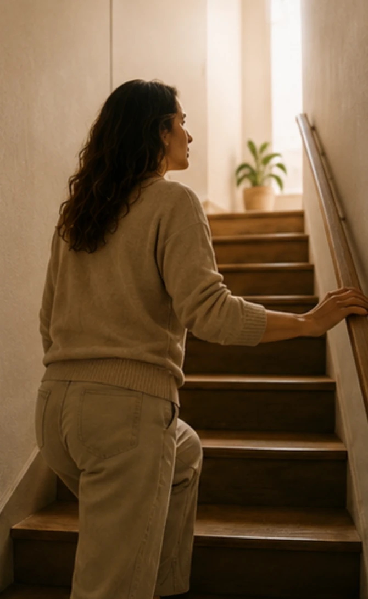

الماذا
المواجهة السلوكية
أيّ درجة تفعل اليوم، وبأيّ مقياس: الوقت، من معك، المسافة، الظروف. أنت تعدّل كل درجة. الالتزام: تبقى الوقت المتّفق عليه ولا تهرب، حتى لو بقي الإنذار مرتفعًا.

التعرّض الحيّ · خطوة بخطوة · القيادة
درجة واحدة في كل مرة. ليس لتتحمّل الخوف بأسنان مشدودة، ولا لتنتظر أن يذهب، بل لتخطو الخطوة وأنت ترافق نفسك من الداخل. إذا نزل الإنذار، ينزل وحده: ليس هو ما نقيسه.
البقاء ليس شدّ الأسنان.
البقاء هو أن تحمل ما تشعر به، وأنت مرافَق.
التعرّض ينجح حين تبقى في الموقف الوقت الذي قرّرته، وأنت ترافق نفسك، بدل أن تذهب لترتاح. إذا ذهبت قبل الوقت كي ينزل الخوف، يتعلّم الخوف أن الهروب ينفع، وفي المرة القادمة يكون أثقل. هذا هو التعزيز السلبي الذي نريد أن نتجنّبه. قد ينزل الإنذار وقد لا ينزل: المهم أنك خطوت الخطوة وبقيت مع نفسك.
لكن البقاء ليس كبت الألم الذي في الداخل. هو أن ترافقه: تتنفّس بفضول، ترخي الجسم، تحتضن نفسك من الداخل، وتكون صادقًا مع ما تشعر به. أن تحمل الألم في الجسم بدون أن تنكر الألم الذي في الداخل.
أولًا نظهر، ثم نبقى. قبل أن تتعرّض، تمرّن كل يوم من الداخل وفي الهدوء (التنفّس بفضول، في ساعات ثابتة)، لا فقط حين يضغط الخوف. هكذا، حين تصعد درجة، لن تكون وحدك مع ما تشعر به: ستعرف كيف ترافق نفسك.
كل خروج يُفتح بمفتاحين
المواجهة السلوكية
أيّ درجة تفعل اليوم، وبأيّ مقياس: الوقت، من معك، المسافة، الظروف. أنت تعدّل كل درجة. الالتزام: تبقى الوقت المتّفق عليه ولا تهرب، حتى لو بقي الإنذار مرتفعًا.
المرافقة الداخلية · AIS
كيف تحمل نفسك من الداخل وأنت هناك: التنفّس بفضول، الشدّ والإرخاء، العناق المحسوس (أن يكون للألم مكان في عائلتك) والصدق العاطفي.
تصعد حين تستطيع أن تفعل درجة وأنت باقٍ مع نفسك، بدون هروب وبدون شدّ الأسنان: لا يكفي كم بقيت (الكمّ)، المهم أيضًا كيف حملت ما شعرت به (النوع). هكذا نتقدّم بثبات وأمان.
هذا السُّلَّم جاهز حسب ما اتّفقنا عليه في الجلسة: الأسبوع الأول مسافات قصيرة داخل القرية، في النهار، مع زوجتك وابنك، خروج واحد كل يوم على الأقل. بعدها نصعد درجة درجة. وفيه أيضًا درجات تقود فيها زوجتك، لتتمرّن على أن تقبل أن ترافقك هي، حتى لو كان عندك خوف أن يحدث لكم شيء. يمكنك تعديل الدرجات أو إضافة غيرها، وتترتّب وحدها حسب الصعوبة.
زوجتك هي المعالِجة المساعِدة في هذه الخرجات: تجلس بجانبك، وتمسك الاتفاق بحزم وحنان. دليلها، ماذا تفعل قبل الخروج وأثناءه وبعده، تجده هنا:
دليل الزوجة بالدارجة ←
دليل الزوجة بالعربية الفصحى ←
⚠️ المرور قرب مكان الحادث لا يكون إلا حين يقرّره الأخصائي. وإذا كان هناك خطر حقيقي (دوار، عطل، طقس سيّئ) نتوقّف في مكان آمن: هذا حذر، لا هروب.
لأخصائيّك النفسي
هذا لا يعوّض العمل مع أخصائيّك: هو طريقة لتخطّط وتسجّل بين الجلسات. بعد كل خروج، اضغط «احفظ وأرسل عبر واتساب» حتى تصله الخرجة. الرسالة تصله بالإسبانية حتى يفهمها مباشرة.